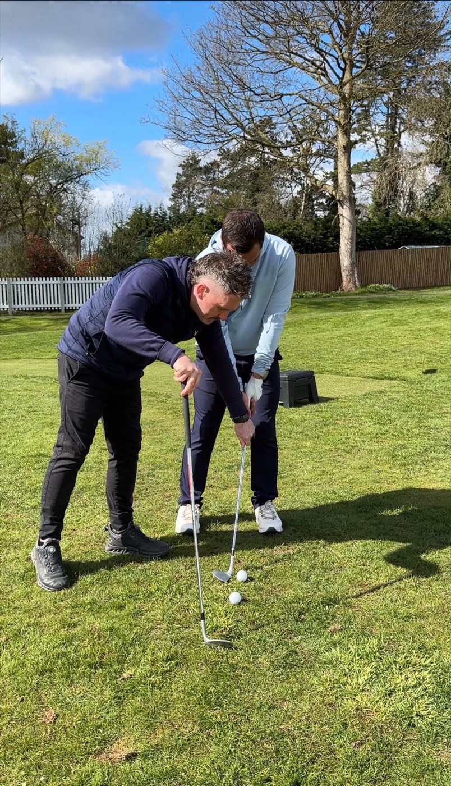

$49
Personal Golf Review
- Personalised review of your game
- Expert video analysis
- Clear priorities for improvement
Personalised PGA Golf Coaching, Wherever You Play
Personalised online coaching with PGA Professional Andy Plester. Understand your game, practice with purpose and start lowering your scores.
Complete golf coaching online worldwide and in person at Ullesthorpe Court Golf Club in Leicestershire.

How Online Golf Coaching Works
Personalised support for your swing, scoring and confidence, wherever you play.
Record your golf swing and send it securely through Skillest.
Get personalised PGA coaching feedback based on your game.
Practice with clear priorities and a structured improvement plan.

About Andy
Andy Plester is a PGA Professional with more than 22 years of coaching experience, an author and a TaylorMade Ambassador. He offers complete golf coaching, helping golfers improve their technique, decision-making, practice and confidence.
His recognised short-game expertise is one part of a coaching approach built around the whole golfer and their goals.
Meet AndyShort-Game Specialist
Andy’s book is a practical guide to smarter short-game decisions and better performance. It reflects a specialist strength within his wider approach to complete golf coaching.
In-Person Coaching
Work with Andy in person at Ullesthorpe Court Golf Club & Driving Range.
Ask About In-Person CoachingYour First Step
Start with your free golf assessment, receive personalised feedback and discover the right coaching route for your game.